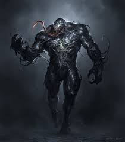
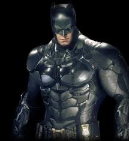
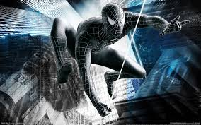
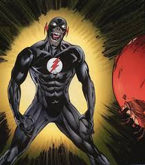

| Прозвище | Описание | Внешний вид |
| Веном | Веном, как таковой, является соединением человеческого тела с инопланетным паразитом. |  |
| Бэтмен | В оригинальной версии биографии Бэтмен — тайное альтер-эго миллиардера Брю́са Уэ́йна, успешного промышленника, филантропа и любимца женщин. |  |
| Черный человек паук | После событий Секретных войн, Человеком-пауком на 4 года (1984-1988) овладел чёрный симбиот из космоса. |  |
| Черный Флэш | Черный Флэш является воплощением Смерти для Спидстеров, поскольку обычная Смерть не была достаточно быстра, чтобы их догнать. |  |